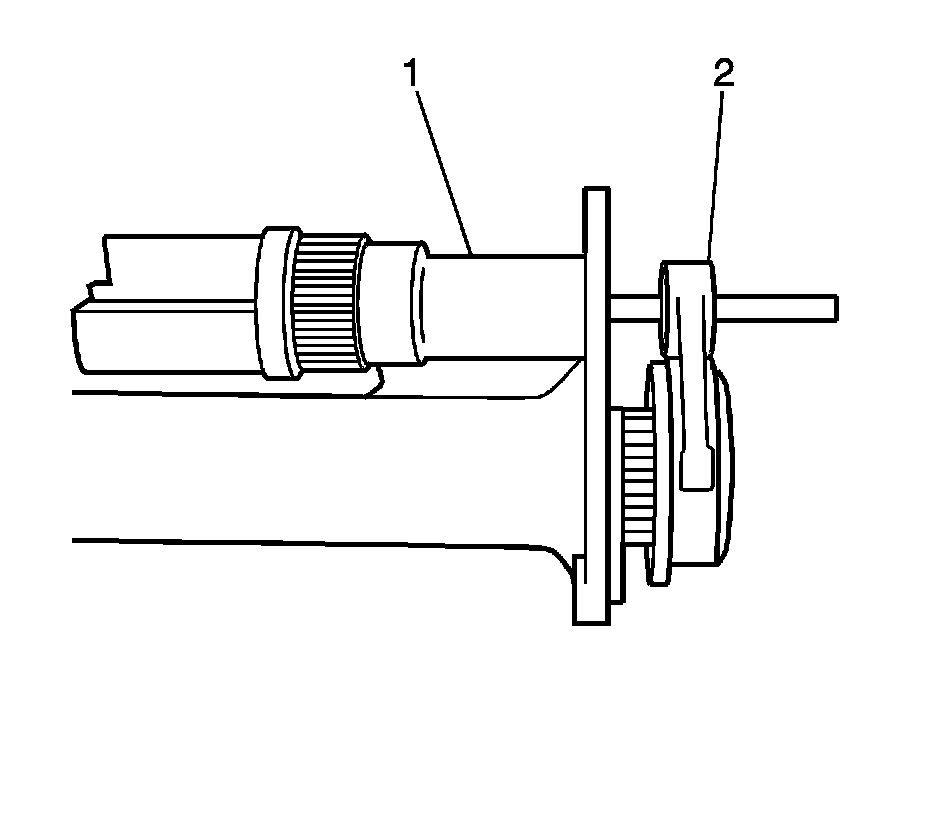

Front Drive Axle Clutch Fork Replacement
Front Drive Axle Clutch Fork Replacement
Removal Procedure

1. Remove the inner axle shaft and housing assembly.
2. Remove the clutch fork assembly (2) from the inner axle shaft housing (1).
3. Remove the clutch fork inner spring from the differential carrier case assembly, if necessary.
Installation Procedure
1. Install the clutch fork inner spring into the differential carrier case assembly, if necessary.
2. Install the clutch fork assembly (2) into the inner axle shaft housing (1).
3. Install the inner axle shaft and housing assembly.